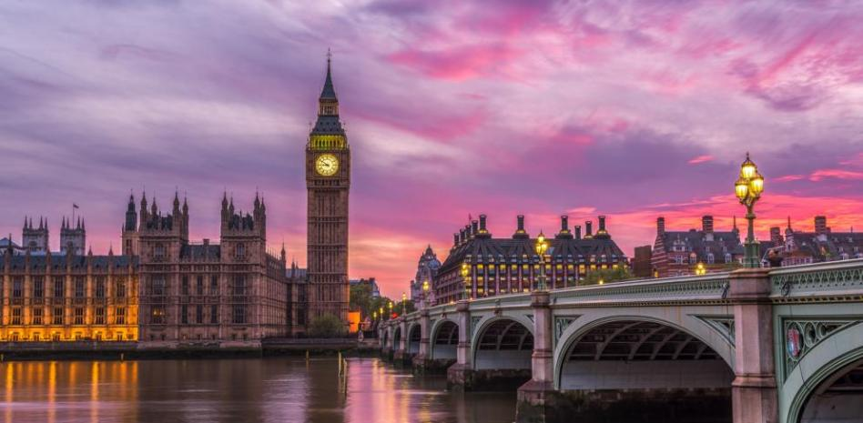

Viaja por el mundo
BELLOS LUGARES

Torre de Pisa
Por su belleza, historia y fortuna, la torre de Pisa fue nombrada Patrimonio de la Humanidad en 1987. Este monumento, concebido como un campanario, se enmarca en el estilo románico de la Edad Media italiana.

Big Ben
La torre del Big Ben, construida en 1858 junto al nuevo Palacio de Westminster, constituye un peculiar edificio de 106 metros de altura construido en un estilo gótico que alberga cuatro enormes relojes situados en sus caras.
Taj Mahal
El Taj Mahal es un mausoleo ubicado en la India, en la ciudad de Agra. Un monumento emblemático de este país, es en mármol blanco finamente cincelado. Fue construido entre 1631 y 1653 bajo el mando de Shah Jahan para albergar la tumba de su esposa, Mumtaz Mahal

Conoce experiencias nuevas
Explora lugares
ㅤㅤ
#Know the world